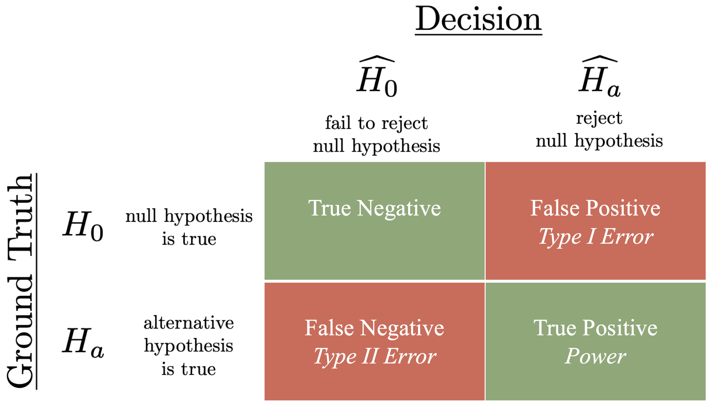

Types of Errors and Statistical Power
Contents
5.7. Types of Errors and Statistical Power#
In this section, we introduce a few important terms and related notation for binary hypothesis testing. We will present these in terms of NHSTs, but the ideas can also be applied to other binary hypothesis tests that we consider later. The focus in this section is on the terminology and meaning of these terms, but we leave the math until Chapter 10.
5.7.1. Types of Errors#
Let’s review and introduce notation for a NHST. The null hypothesis is \(H_0\), and the alternative hypothesis is \(H_a\). Let \(\widehat{H}_0\) denote the event that we do not reject the null hypothesis, and let \(\widehat{H}_a\) be the event that we reject the null hypothesis. Then there are four different scenarios that can occur, which are shown in the matrix below:
{kind=link}

Fig. 5.1 Error matrix showing combinations of ground truth and decisions for null hypothesis significance testing (NHST).#
The rows of Fig. 5.1 correspond to different possibilities; this is the actual reality. If the ground truth is \(H_0\), the null hypothesis is actually true; typically for NHST, this means that the two groups of data do actually come from the same distribution. In the cells of the matrix, we will label this result negative to indicate that there is no difference between the groups (in the test statistic). If the ground truth is \(H_a\), then the alternative hypothesis is true; for NHST, this means that the two groups of data come from different distributions. In the cells of the matrix, we will label this result positive to indicate that there is a real difference between the groups.
The columns of Fig. 5.1 correspond to different decisions from the NHST. If \(\widehat{H_0}\), then the null hypothesis is not rejected. If \(\widehat{H_a}\), then the null hypothesis is rejected. When the decision matches the ground truth, that result is said to be True; if the decision does not match the ground truth, the result is said to be False.
Then the entries in the cells of the matrix show the combination of these effects:
The top left cell corresponds to the null hypothesis being true (\(H_0\)) and not rejected (\(\widehat{H_0}\)), so this is a True Negative.
The top right cell corresponds to the null hypothesis being true (\(H_0\)) but rejected (\(\widehat{H_a}\)), so this is a False Positive.
The bottom left cell corresponds to the alternative hypothesis being true (\(H_a\)) but the null hypothesis being accepted (\(\widehat{H_0}\)), so this is a False Negative.
the bottom right cell corresponds to the alternative hypothesis being true (\(H_a\)) and the null hypothesis being rejected (\(\widehat{H_a}\)).
5.7.1.1. Type I and Type II Errors#
Note that two of the cells in Fig. 5.1 correspond to errors, which we have called false positive and false negative. These are also commonly referred to as Type I and Type II errors:
DEFINITION
- Type-I Error#
A Type-I Error is a false positive, and is sometimes denoted by the greek letter \(\alpha\) (“alpha”). For NHST, a Type I error occurs if the null hypothesis is actually true, but it is rejected.
For NHST, the significance threshold, \(\alpha\), is the acceptable probability of Type I error. It is the acceptable probability of false indicating significance by rejecting \(H_0\) when \(H_0\) is actually true.
DEFINITION
- Type-II Error#
A Type-II Error is a false negative, and is sometimes denoted by the greek letter \(\beta\) (“beta”). For NHST, a Type II error occurs if the alternative hypothesis is actually true, but the null hypothesis is not rejected.
One of the key principles of NHST is that it requires no knowledge of the alternative hypothesis. Thus, under NHST it is not possible to quantify the probability of failing to reject \(H_0\) when \(H_a\) is actually true. However, designing experiments (such as choosing the sample size) often requires us to make some assumption about \(H_a\), and the power of the test.
How to keep Type I and Type II error straight?
Remember that both of these are types of errors that show up in the NHST error matrix. The entries in that matrix are either True results or False results, and errors correspond to False results.
Remember that entries in the NHST error matrix are either Positive (indicating an effect) or Negative.
The previous two points will help you remember that errors are either False Positive or False Negative.
Finally, here are three ways to remember the relation between Type I/Type II and False Positive/False Negative[1]:
Map Positive to True and Negative to False. Then False Positive has 1 False, and thus is a Type I error. False Negative has 2 Falses, and so is Type II error.
Recall the story of the boy who cried wolf, and treat the normal case of no wolf as the null hypothesis. The first time he cried wolf, the townspeople made a Type I error: there was no wolf and they believed him that there was a wolf – this was a False Positive. The second time he cried wolf was a Type II error: there was a wolf, but the townspeople believed that there was no wolf – this was a False Negative.
Recall that we can only evaluate the probability of False Positive under NHST. Thus, it makes sense that these be the Type I errors. Determining the probability of Type II errors require information about both \(H_0\) and \(H_a\).
5.7.2. Statistical Power#
We start by defining the power of a statistical test:
DEFINITION
- power (of a statistical test)#
The probability of rejecting the null hypothesis when the alternative hypothesis is true.
If the probability of Type-II error is \(\beta\), then the power of the test is \(1- \beta\). Power is often used in experimental design and in particular used to choose sample sizes. However, just like the probability of Type-II error, determining power requires knowing some characteristics about how the random distribution of the underlying data is different under \(H_a\) in comparison to \(H_0\). For instance, in Section 3.4, we introduced the average, or mean, of a sample. The underlying distributions also have associated means, and if we know something about the difference in means, we may be able to estimate how large the sample size must be to ensure that the null hypothesis will be rejected with a high probability.
To understand this further, we need to use mathematical characterizations of random distributions, which are introduced in Chapter 8 and Chapter 9.